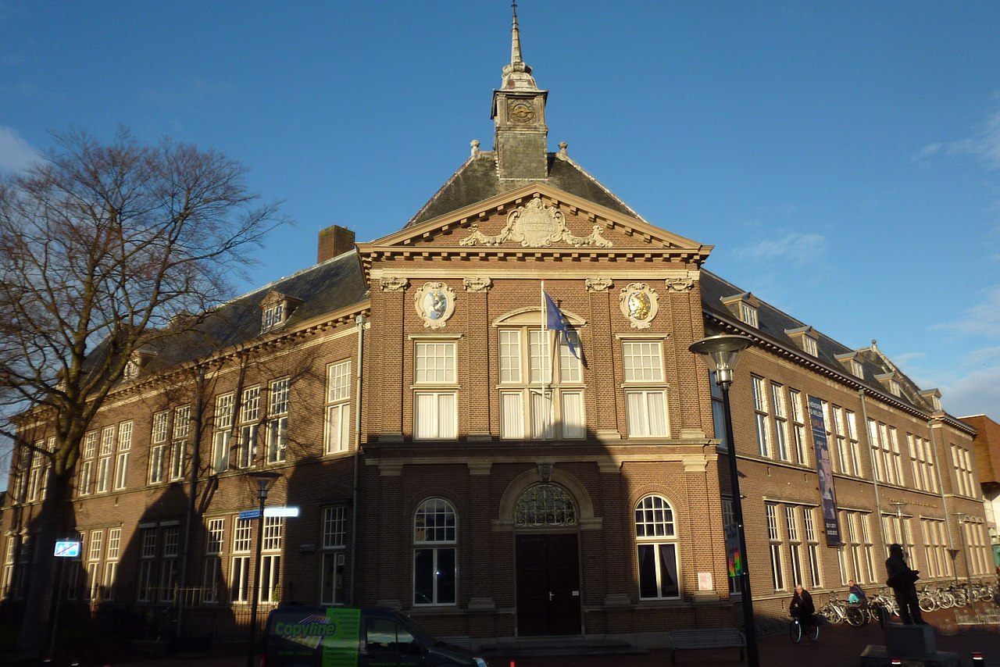

Veenkoloniaal Museum

Geschiedenis
In 1939 is het museum ontstaan uit de Vereeniging voor Veenkoloniale Oudheidkunde. De basis van de collectie werd echter al gelegd door Eltjo van Beresteyn die van 1910 tot 1916 burgemeester was van de gemeente Veendam en zijn latere opvolger F.J. de Zee die van 1921 tot en met 1940 burgemeester was.[1] De collectie verhuisde van het gemeentehuis en werd ondergebracht in een oudheidkamer boven het politiebureau, later Openbare Bibliotheek aan de Kerkstraat. In 1989 betrok het museum het gebouw van de vroegere R.H.B.S. te Veendam. Het gebouw werd omgebouwd tot museum. In 1992 volgde de officiële heropening. Het gebouw is ontworpen door de architect en rijksbouwmeester Jan Vrijman en werd in 1911 als school in gebruik genomen.
In 1987 verloor het gebouw zijn onderwijsbestemming. Het Veenkoloniaal Museum kreeg vanaf 1989 de beschikking over het monumentale pand. In 2004 werd het gebouw verbonden met het nieuwe cultuurcentrum van Beresteyn, waardoor theater, bibliotheek, muziek-, dans- en theaterschool en museum onder één dak zijn gehuisvest.
Collectie
Het Veenkoloniaal Museum voert een gericht verzamelbeleid en legt daarbij het accent op de vervening, de landbouwindustrie en de Veenkoloniale zeevaart.
In het maritieme gedeelte staat men stil bij de bloeiperiode van de Veenkoloniale Zeevaart, die rond het midden van de 19de eeuw plaatsvond. Honderden schepen kwamen toentertijd uit de Groninger Veenkoloniën, meer dan 60 procent van de Nederlandse vloot was hier geregistreerd. Regelmatig werd koers gezet richting Oostzee en Riga was een belangrijk eindbestemming. Het museum heeft daarom ook een speciale Rigazaal ingericht. Het museum bezit een grote collectie Oostzeelepel(s), Riganap(pen) en Toejas(sen).
In de collectie landbouwindustrie ligt het accent op de met de veenkoloniën verbonden industrie als (stro)karton- en aardappelmeelfabrieken. Het Avebeconcern heeft zijn hoofdvestiging in Veendam. Men staat daarbij ook stil bij de nieuwere ontwikkelingen. Strokarton wordt al sinds het midden van de jaren zeventig van de vorige eeuw niet meer geproduceerd, maar nog altijd draaien er kartonfabrieken in Oude Pekela en Nieuwe Pekela, Bad Nieuweschans, Hoogezand en Sappemeer. Fabrieken die tegenwoordig meer produceren dan alle kleine strokartonfabrieken van het begin van de 20ste eeuw bij elkaar. Het museum organiseert jaarlijks diverse tentoonstellingen. Bovendien bezit het het oudste turfschip van de provincie Groningen, de in 1894 te Veendam bij scheepswerf Ten Horn te Veendam gebouwde spitse praam Familietrouw.
Voorts beschikt het museum over een kunstcollectie van kunstenaars en schrijvers die in de regio hebben gewerkt, o.a.; Bart Peizel, Geert Hendrik Streurman, Herman Mees, Geert Teis, in bruikleen ondergebracht bij het Streekhistorisch Centrum en Anthony Winkler Prins, ondergebracht bij de Groninger Archieven.